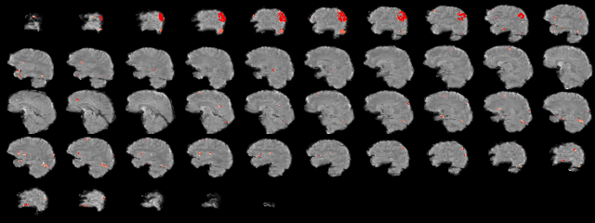
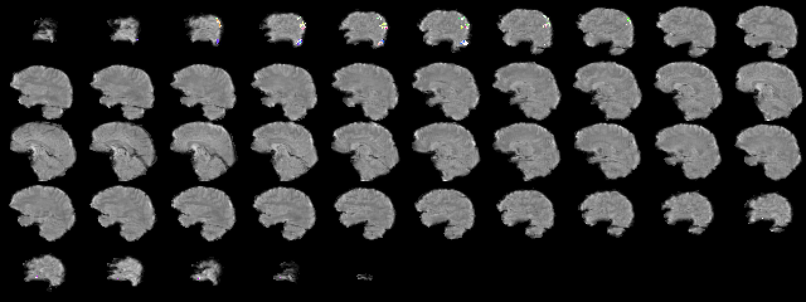
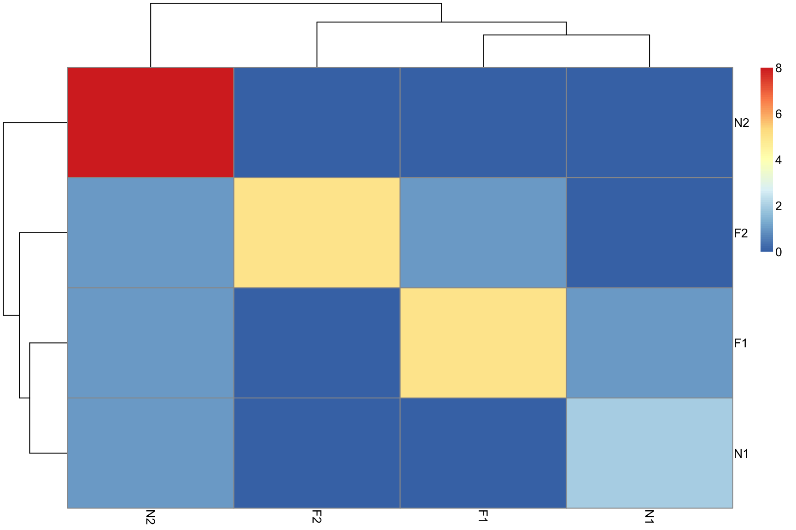
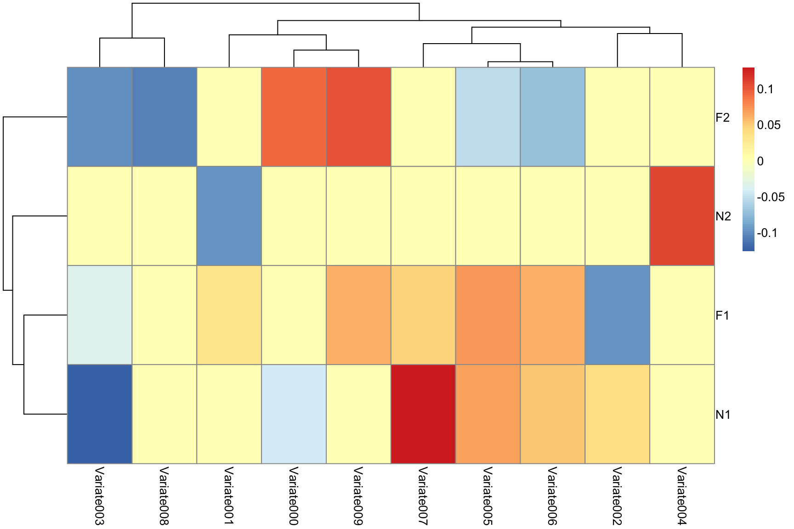

This package integrates several frameworks for BOLD processing:
core image processing and I/O: ITK (Avants, Tustison, et al. (2014));
registration and utilities for image processing: ANTs (Tustison et al. (2014)) and ANTsR (PICSL (2014));
hemodynamic response function estimation: influenced by GLMdenoise (Kay et al. (2013)) and finite impulse response (Kay et al. (2008)) estimates;
dimensionality reduction: Eigenanatomy (Dhillon et al. (2014)) and SCCAN (Avants, Libon, et al. (2014));
core statistics and temporal filtering via R packages.
In combination, these tools enable one to go from near-raw medical imaging data to a BOLD decoding experiment.
RKRNS makes several assumptions about data organization.
The BOLD time series will be masked and converted to a matrix. This will be known as “the BOLD matrix.”
The design matrix is binary and has one event type per column.
The design matrix matches the bold matrix in time at an index level. Thus, it has the same number of rows (volumes) as the BOLD matrix. So, the i\(^{th}\) row of the design matrix corresponds to the i\(^{th}\) BOLD volume. We provide some utilities to assist in assembling the BOLD volumes in this manner.
Simplicity aids debugging but has caveats (rounded event onsets, etc).
RKRNS includes:
relatively small scripts implement full study
compcor and glmDenoiseRflexible: easy to estimate voxel-wise optimal models, HRFs, etc
Reference simulation data and decoding distributed with the package
anatomical labeling of predictors based on AAL
this document tests the package
We adapted methods from the neuRosim (Welvaert et al. (2011)) package in order to simulate event-related BOLD data. This data involves a 4-class decoding task. One seeks to identify brain responses to novel faces, famous faces and their first and second presentations to the subject. We distribute the underlying anatomical BOLD data along with a cortical mask within the package. The data may be loaded by:
library(RKRNS)
fn<-paste(path.package("RKRNS"),"/extdata/111157_mocoref_masked.nii.gz",sep="")
eximg<-antsImageRead(fn,3)
fn<-paste(path.package("RKRNS"),"/extdata/subaal.nii.gz",sep="")
mask<-antsImageRead(fn,3)which gives you both the cortical mask and the example BOLD signal image eximg. ANTsR also provides AAL label (Tzourio-Mazoyer et al. (2002)) names via:
data(aal,package='ANTsR')
labs<-1:90with cortical labs defined by labs.
We generate simulated bold data as in neuRosim.
The simulateBOLD function results in a bold image in the antsImage class. We subsequently convert this image to a \(n\times p\) matrix where there are \(n\) time volumes and \(p\) voxels in the mask.
bb<-simulateBOLD(option="henson",eximg=eximg,mask=mask)
boldImage<-bb$simbold
mat<-timeseries2matrix( boldImage, bb$mask )The data frame containing the bold image also contains the design matrix. One should inspect that matrix to get an idea of the structure expected by RKRNS. Row names and column names are expected to exist in the design matrix dataframe.
Perform some diagnostic visualizations on the data.
randvox<-sample(1:ncol(mat),4)
plot(ts(mat[,randvox]))The time series is noisy, as expected.
Let’s get rid of high frequency noise.
# only filter high frequencies 1/(2*tr)
filtmat<-filterfMRI4KRNS( data.matrix(mat), tr=1, NA, NA, trendfrequency=2, trendfrequency2=NA )
plot(ts(filtmat[,randvox]))We can eliminate low frequency contamination with polynomial regressors and other denoising techniques at a later step.
armat<-arCorrection( mat )
print(armat$arcoefs)## [1] -0.02820 -0.05086plot(ts(armat$outmat[,randvox])) The armat$arcoefs indicate auto-correlation levels of the input data. This function tries to shrink these levels toward zero.
Use glmDenoiseR to estimate a FIR HRF.
mypolydegree<-12
glmda<-glmDenoiseR( data.matrix(mat), bb$desmat[,1:4], hrfBasis=NA,
hrfShifts = 12, maxnoisepreds=0 , selectionthresh=0.1 ,
collapsedesign=T, polydegree=mypolydegree, baseshift=0 )Take a quick look at the estimated hemodynamic response function.
plot(ts(glmda$hrf))If this doesn’t look “normal,” then there may be a problem. One might also do an SVD on the run-wise HRFs and derive a more flexible basis set for your study.
We estimate a \(\beta^i\) vector for each of \(i \in 1 \cdots q\) events. This vector contains a scalar \(\beta\) value for each voxel, i.e. \(\beta_j^i\) where \(j \in 1 \cdots p\). This example can be found via ?bold2betas.
runs<-bb$desmat$Run;
btsc<-bold2betas( boldmatrix=data.matrix(mat),
designmatrix=bb$desmat[,1:4], baseshift=0,
blockNumb=runs, maxnoisepreds=0, hrfBasis=glmda$hrf,
hrfShifts=0, polydegree=mypolydegree, selectionthresh=0.2 )
mylabs<-rep("",nrow(btsc$eventbetas))
for ( i in 1:nrow(btsc$eventbetas) )
mylabs[i]<-substr( rownames(btsc$eventbetas)[i],1,2)
mylabs<-as.factor(mylabs)We recommend that one looks at the estimated hemodynamic response function in order to help set parameters. This is available as output from the bold2betas function (and glmDenoiseR). Key parameters are the basis length for HRF estimation, the maximum number of noise predictors (e.g. maxnoisepreds=4 or maxnoisepreds=2:10 to search a range), the polynomial degree and the selectionthresh which should be kept below 0.5. Real data processing should proceed similarly. The latter part of the sample code extracts labels from the rownames of the output event beta dataframe. This will set us up for decoding.
Use effect size to select a subset of the full voxel matrix.
# sample for training
inds<-sample(1:nrow(btsc$eventbetas),size=round(nrow(btsc$eventbetas)*3./4.))
# basic voxel selection using effect size & classification
zz<-apply(btsc$eventbetas,FUN=mean,MARGIN=2)
zze<-zz/apply(btsc$eventbetas,FUN=sd,MARGIN=2)
th<-0.4
ff<-which( abs(zze) > th )
mydf<-data.frame( lab=mylabs, vox=data.matrix(btsc$eventbetas)[,ff])
mdl<-svm( lab ~., data=mydf[inds,])
err<-sum(mydf[-inds,]$lab==predict( mdl, newdata=mydf[-inds,]))/nrow(mydf[-inds,])
print(paste("NPredVox",length(ff),"Correct",err*100))## [1] "NPredVox 612 Correct 72"The “high effect size” voxels are sent to a naive support vector machine to do training (on a fraction of the data) and testing on the left out data.
Effect size increases when a measurement has low variance and a high value. The effect size of cross-validated beta estimates may aid voxel selection.
# ccnuis<-compcor( mat, 2 ) # a denoising option not used here ....
stb<-stableEventResponse( mat, bb$desmat[,1:4], bb$desmat$Run,
polydegree=mypolydegree, hrf=btsc$hrf )Use a threshold to find clusters of voxels with large effect.
stb2<-abs(stb)
stb2[ stb2 < 5 ]<-0
ee<-eigSeg(mask, matrixToImages( stb2, mask) )
ImageMath(3,ee,'ClusterThresholdVariate',ee,mask,5)
ff<-which( ee[mask==1] > 0 )
ofn<-"Figs/eigseg.jpg"
plotANTsImage( eximg, list(ee), slices='12x56x1',
thresh='1x4',color='red',outname=ofn)The eigSeg function labels each region of the mask with the class that has the largest effect size.
Should return the magnitude of effects … FIXME colors above.

Use only those voxels that exist within clusters and have maximum response for some label class.
mydf<-data.frame( lab=mylabs, vox=data.matrix(btsc$eventbetas)[,ff])
mdl<-svm( lab ~., data=mydf[inds,])
err<-sum(mydf[-inds,]$lab==predict( mdl, newdata=mydf[-inds,]))/nrow(mydf[-inds,])
print(paste("EigSegPredVox",length(ff),"Correct",err*100))## [1] "EigSegPredVox 753 Correct 80"Investigate the time series for each stimulus.
CCA maximizes \(PearsonCorrelation( XW^T, ZY^T )\) where \(X, W\) are as above and \(Z\) and \(Y\) are similarly defined. CCA optimizes the matrices \(W, Y\) operating on \(X, Z\) to find a low-dimensional representation of the data pair \(( X , Z )\) in which correlation is maximal. Following ideas outlined in Dhillon et al. (2014) and Avants, Libon, et al. (2014), this method can be extended with sparsity constraints that yield rows of \(W, Y\) with a controllable number of non-zero entries.
Set up the CCA by pairing the beta matrix with the design matrix.
ccamats<-list( data.matrix(btsc$eventbetas)[inds,] ,
data.matrix(bb$desmat[btsc$eventrows,1:4])[inds,] )Use the SVD of the beta matrix to initialize sparse CCA.
initcca<-t( svd( btsc$eventbetas, nu=0, nv=10 )$v )
initcca<-initializeEigenanatomy( initcca, mask=mask, nreps=1 )$initlist
nv<-length(initcca)These 10 vectors initialize the sparse optimizer in a good place.
The design matrix guides the dimensionality reduction performed on the \(\beta\) matrix.
mycca<-sparseDecom2( inmatrix=ccamats, initializationList=initcca,
sparseness=c( -0.001, -0.95 ), nvecs=nv, its=10, cthresh=c(250,0),
uselong=0, smooth=0.0, mycoption=1, inmask=c(mask,NA) )
ccaout<-(data.matrix(imageListToMatrix( mycca$eig1, mask )))
ff<-which(colSums(abs(ccaout))>1.e-4)We also count the non-zero voxels which cover 0.787% of the brain.
Given CCA solution matrix \(W\), one may employ the low-dimensional representation, \(XW^T\), in multi-label classification. Currently, we employ SVM or random forests as multi-label learners for the problem:
\[L_i = f( XW^T ),\]
that is, learning a (sentence) label function from the BOLD data.
mydf<-data.frame( lab=mylabs,
vox=data.matrix(btsc$eventbetas) %*% t(ccaout) )
mdl<-svm( lab ~., data=mydf[inds,])
err<-sum(mydf[-inds,]$lab==predict( mdl, newdata=mydf[-inds,]))/nrow(mydf[-inds,])
print(paste("CCA: Correct",err*100))## [1] "CCA: Correct 80"# here is another approach ... use cca to transform BOLD signal to stimuli
mydf3<-data.frame( lab=mylabs,
vox=data.matrix(btsc$eventbetas) %*% t(ccaout) %*% t(mycca$eig2) )
mdl2<-svm( lab ~., data=mydf3[inds,])
err<-sum(mydf3[-inds,]$lab==predict( mdl2, newdata=mydf3[-inds,]))/nrow(mydf3[-inds,])
print(paste("CCA2: Correct",err*100))## [1] "CCA2: Correct 84"The input predictors are both clustered and sparse.
Rescale the cca results and make a picture.

heatmap of co-occurrence of predictions
## truth
## pred F1 F2 N1 N2
## F1 5 0 1 1
## F2 1 5 0 1
## N1 0 0 2 1
## N2 0 0 0 8
ANTs propagates AAL labels to the cortex (Avants, Tustison, et al. (2014),Tustison et al. (2014))
fn<-paste(path.package("RKRNS"),"/extdata/111157_aal.nii.gz",sep="")
aalimg<-antsImageRead(fn,3)
ccaanat<-list()
for ( img in mycca$eig1 ) {
nzind<-img[ mask == 1 ] > 0
aalvals<-aalimg[ mask == 1 ][ nzind ]
aalmax<-which.max( hist( aalvals, breaks=1:90, plot=FALSE )$counts )+1
ccaanat<-lappend( ccaanat, aal$label_name[aalmax] )
}The SCCAN predictors include: Temporal_Inf_R, Temporal_Inf_R, Angular_R, Angular_R, Parietal_Inf_R, Temporal_Inf_R, Temporal_Inf_R, Temporal_Inf_R, Temporal_Inf_L, Angular_R.
How much of the known network do we actually find?
Recalling: CCA maximizes \(PearsonCorrelation( XW^T, ZY^T )\), we can study matrix \(Y\) which contrasts or combines columns of the design matrix.
rownames(mycca$eig2)<-levels(mylabs)
temp<-(mycca$eig2)
temp[ abs(mycca$eig2) < 0.03 ]<-0pheatmap(temp)
With the current RKRNS, one may:
Exploit R functionality with BOLD data
Estimate HRFs and event-wise betas
Use feature selection based on effect sizes
Employ dimensionality reduction through eigenanatomy or SCCAN
Use relatively few low-dimensional predictors for decoding
Interpret multivariate results intuitively
Allows us to exploit prior anatomical labels ….
or conceptions about what anatomy the decoding should be driven by?
The package needs evaluation at this level of detail on real data.
See RKRNS for all source code and documentation and RKRNS-talk for html slides.
To motion correct your data, one might run:
# get an average image
averageImage <- getAverageOfTimeSeries( boldImage )
motionCorrectionResults <- motion_correction(boldImage,
fixed = averageImage, moreaccurate = 0 )Set the moreaccurate flag to 1 or 2 for usable (not test) results. You might also estimate FD and DVARS from these results. One might use antsPreprocessfMRI to get these directly. Note, however, to turn this function’s frequency filtering off if you want to do decoding.
hey hey …